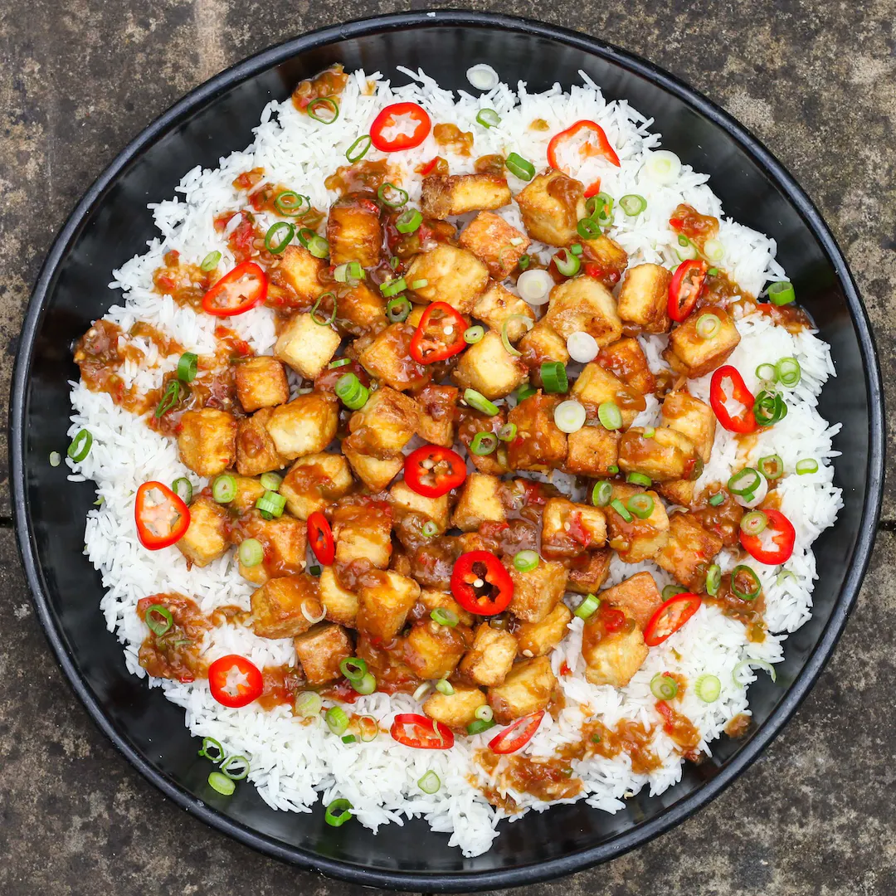

Crispy Sesame Tofu with Sticky Sauce

Description
Crispy tofu in a gingery, sticky sauce. One of the all time great tofu dishes for the MOB.
Ingredients
- 560g Tofu (we use Tofoo)
- Knob of Ginger
- 1 Tsp Sesame Oil
- 50g Cornflour
- 5 Tbsp Soy Sauce
- 3 Spring Onions
- 400g Basmati Rice
- 1 Red Chilli
- 1 Clove of Garlic
- Vegetable Oil
Steps
- Chop your tofu up into little cubes. Dab cubes with kitchen roll to remove the excess moisture. Place the
tofu cubes into a bowl.
- Add 4 tbsp of your soy sauce, one heaped tbsp of grated ginger, a tsp of grated garlic, and sesame oil.
Gently mix together.
- Cover the bowl, place it in the fridge and leave to marinate for 15 minutes.
- Remove tofu from the fridge. Pour a good helping of cornflour into a bowl. One by one, roll each tofu cube
in the cornflour so they are coated on all sides. By the end, they should all have a gummy layer of
cornflour on each side.
- Pour 1 part rice to 2 parts boiling water into a pan and cook on a medium heat, until the rice has absorbed
all the water.
- Heat a large frying pan and pour in a good glug of vegetable oil. Place your tofu cubes in the pan. Cook on
a medium heat. Each cube will need about 4 minutes on each side. Just keep turning them until all sides are
golden.
- Once golden on all sides, remove the cubes from the heat. Set them on some kitchen roll so any excess oil is
soaked up.
- Sauce time. Place a pan on the heat and pour in the leftover marinade. Add your last tbsp of soy sauce, a
chopped red chilli, chopped spring onions, a tsp of grated ginger and a glass of water.
- As the sauce is bubbling, mix one tsp of cornflour in with a glass of water until it is dissolved. Pour this
water into the sauce and mix it in. Remove the sauce from the heat when it is thick and sticky.
- Time to serve up. In a bowl, spoon in some rice, then lots of the crispy tofu and pour over some of the
sauce. Garnish with some chopped spring onions and tuck in! Enjoy!